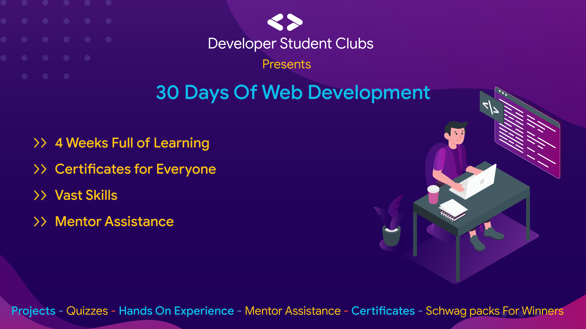
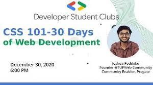
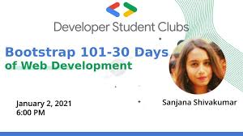
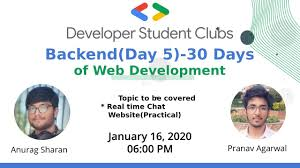
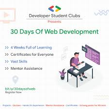

My Experience with 30 days of Web Development
Hola! Readers.
Here I will share my Journey of 30 days of web development program
organised by 50+ DSC's all over world
Article By :Rayman Sodhi
Hi Readers. I would like to share about 30 days of web development.30 Days of Web Development
The Program provided an opportunity to kick start one's journey in web development and get hands-on experience with HTML, CSS, JS,
Bootstrap, and some basics of back-end.It was hosted on skillenza platform and there was a discord server .
All of the resorces were available on github and there were live sessions hosted on youtube
> It was organized by a total of 50+ DSC Leads over the world.
>The main objective behind this program was to provide best content possible at no cost, with sessions from awesome speakers
and skilled mentors who were there to help us throughout the process.
> Along the way, we worked with HTML, CSS, JS, Bootstrap, Node JS basics with the help of beginner-friendly content that was designed.
> We also worked on some quizzes based on what we learned along with some projects which helped us get better with the basics each day.
>The program focussed on creating a portfolio website of our own and there were side projects like to-do list and blog website.
Week One Session

The first week was all about learning basics of git,github and html in particular.It began with a git task and further the html week had quiz and free resources to help brush up one's knowledge .There was also a youtube session in which html was taught from the very basics.As the first project we created a barebones prtfolio website primarily with html.
Week Two Session
The second week was all about learning css. The css week also had quiz and free resources. There was also a youtube session in which css was applied to a simple html project .This week helped us gain insights of various styling techniques. As second project We added css to our barebones html portfolio website in project one
Week Three Session
The third week was all about learning bootstrap . Bootstrap provides an easy way to style our projects and has pre-written code which can help save our time. There were resorces and a youtube session for this week.As third project we added bootstrap4 to our project second in addition to the css that was used in it.
Week Four Session
The fourth week was all about learning javascript . It was about understanding how javascript works and how the code is written.There were quiz,youtube sessions and free resources for this week.As forth project we had to create two projects.The first one was about making a to-do list using javascript and the second one included using javascript in our project three to create a form section which used flex-box and a new row appeares as the user types.It also shows some warnings if the data is not filled correctly.
Week Five Session
The fourth week was all about learning backend. This week was about learning backend in detail .We learned about how internet works and about client server model. We had three live youtube sessions to learn about firebase model,how to get a domain and host a website. As a part of fifth project we hosted our portfolio website on firebase or github pages.
Week Six Session
There was no session for week session as it included creating a blog website and link it with the
portfolio website created in project five.This week was all about applying all the frontend and backend learned during the whole program
and complete studying all the resources ,completing all the quizzez,mini projects and main projects.
I would like thank the organisers for this wonderful 30 days of consistency and learning. The knowledge and skills learnt here are sufficient to begin one's journey as a web developer.I would suggest everyone to go through the resources offered by them .And would love to be a part of more such programs.